Tu garaje
Todos tus coches y motos en un sitio, cada uno con su silueta. Si el tuyo no está en el catálogo, lo creas tú.
Windows y Android · Gratis
El programa del club para llevar el mantenimiento de tus coches y motos: qué toca hacer y cuándo, todo lo que ya se le ha hecho y sus papeles, en un solo sitio. Con app de móvil para anotar sobre la marcha.
Nuestra filosofía
Garaje nació casi por casualidad. Nos pidieron un manual de taller para hacer un trabajo y, investigando, nos dimos cuenta de que faltaba una forma de tener todos esos datos a mano. Tirando del hilo salieron la aplicación y el programa.
Cualquier amante del motor tiene el mismo problema. Cada vez que toca cambiar el aceite o una bujía, o tienes una libreta donde lo apuntas todo, o acabas perdiendo las referencias: no sabes qué tienes que poner y lo investigas diecisiete veces hasta que te lo aprendes de memoria.
El aceite te lo sabes, porque es lo de siempre. Pero ¿cuándo cambiaste las bujías? Si tocan cada 60.000 km (depende del coche), pueden haber pasado tres años; en un coche de proyecto, hasta nueve. Y cuando llegas a esos 200.000 km en los que tocaba, ya ni te acuerdas.
Así que pensamos: con las herramientas que hay hoy, ¿por qué no un programa donde tener tus referencias y los datos importantes, saber qué lleva tu coche y cuándo hiciste cada cosa, y que además te recuerde lo que toca en cada momento? En el club tenemos capacidad para desarrollarlo, así que lo hicimos. Iba a ser solo para nosotros, pero es tan práctico que puede usarlo cualquiera. Por eso lo publicamos, y Garaje es gratis.
Lo que puedes hacer
Todos tus coches y motos en un sitio, cada uno con su silueta. Si el tuyo no está en el catálogo, lo creas tú.
Avisos de mantenimiento por kilómetros y por tiempo: aceite, filtros, frenos, distribución… También la ITV y el seguro.
Para cada motor: qué aceite lleva y cuánto, filtros, intervalos y más, para que sepas qué pedir.
Cada trabajo que se le hace al vehículo, con sus kilómetros, su fecha y sus facturas.
Los papeles del vehículo a mano, con aviso cuando algo caduca.
Anota en el momento desde el móvil y se sincroniza con el programa. Te avisa cuando se acerca el próximo mantenimiento.
Guarda todo en un archivo y recupéralo cuando quieras, también en otro ordenador.
Cuando sale una versión nueva, el programa te avisa y se actualiza. Sin cuentas y sin anuncios.


Paso a paso
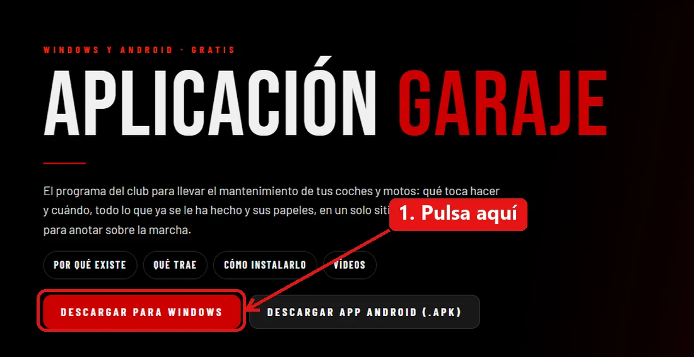
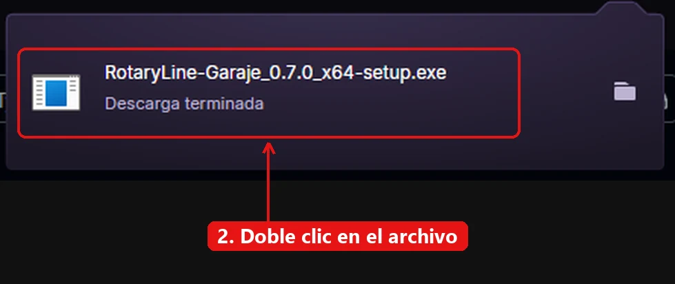
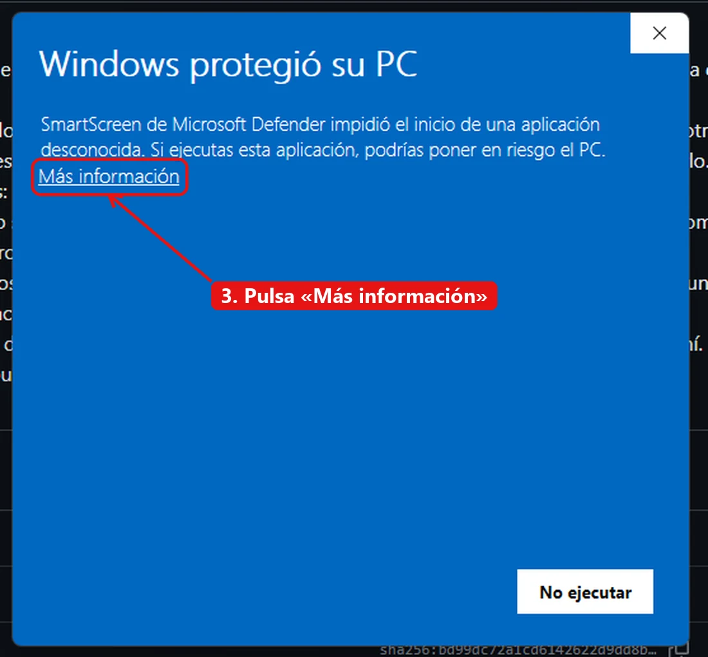
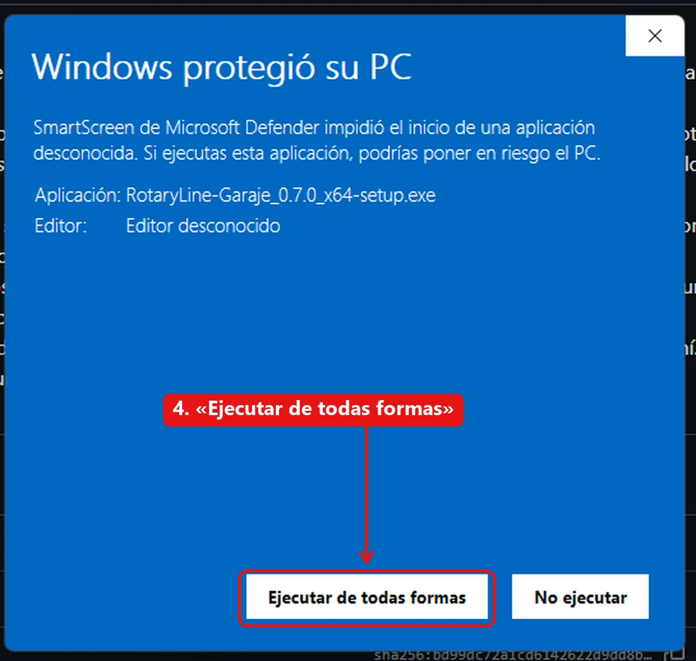
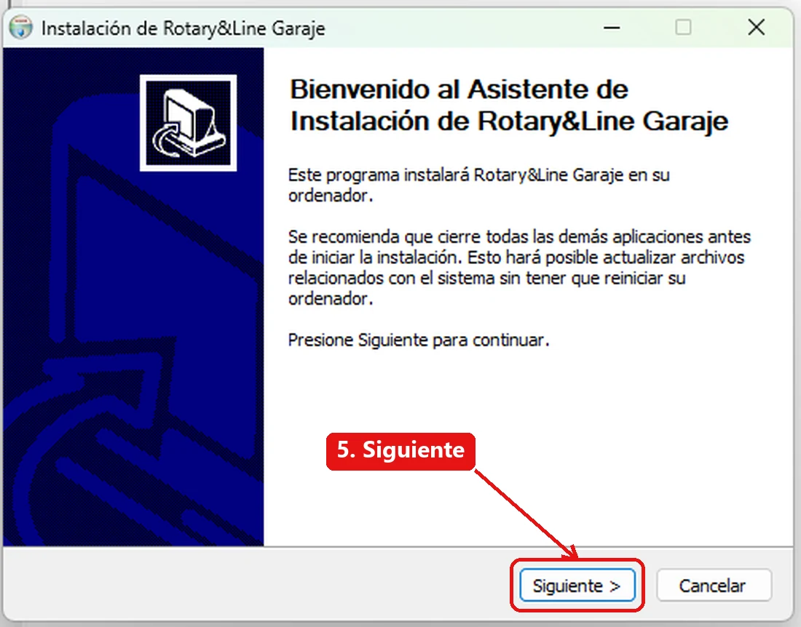
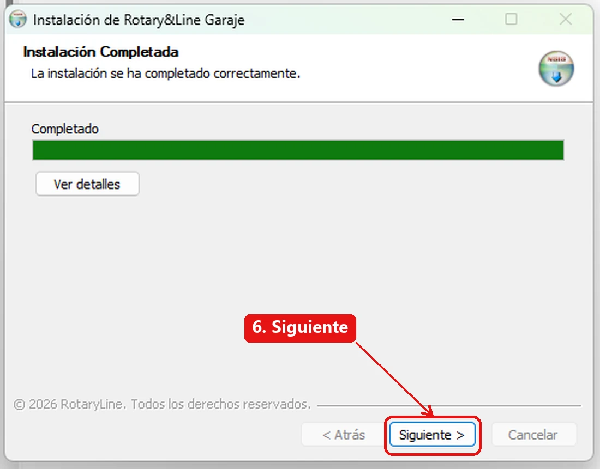
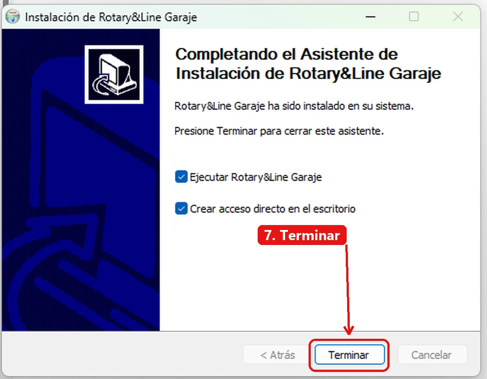
Y ya está: al abrirlo por primera vez, el programa te guía para aceptar las condiciones y añadir tu primer vehículo. Si te pierdes, tienes los tutoriales paso a paso.
La app no está en Google Play: se instala desde aquí, con el archivo .apk. Android avisa varias veces porque no la conoce; es normal.
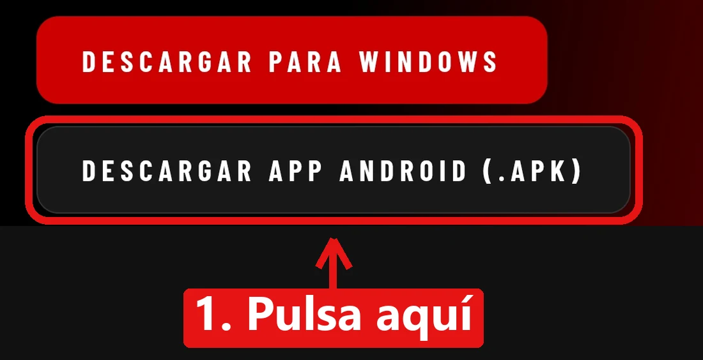
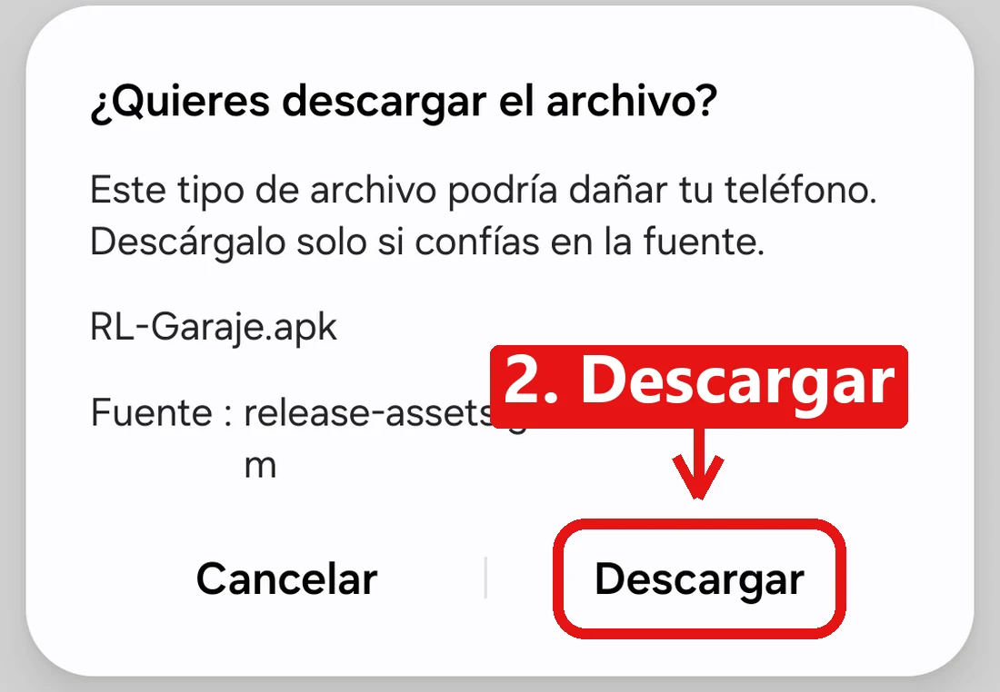
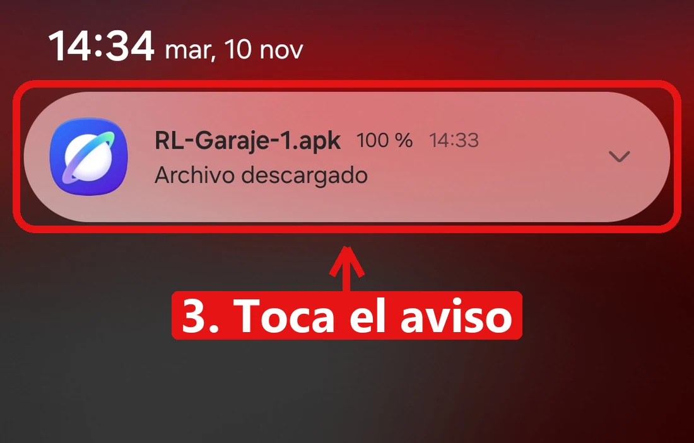
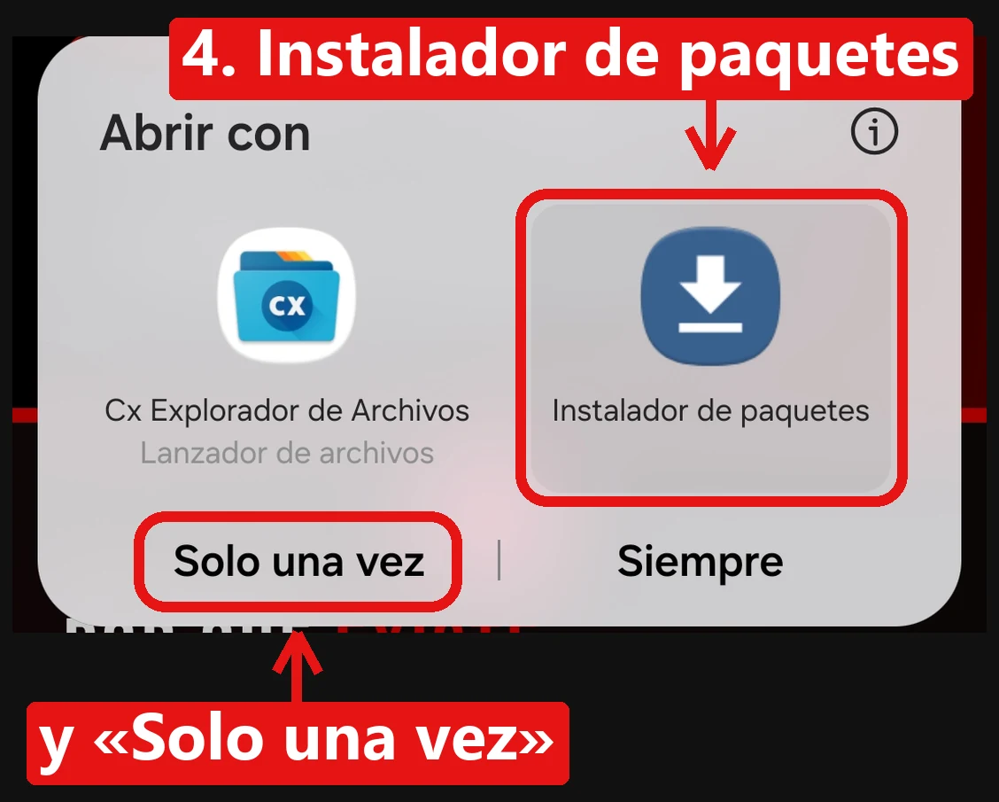
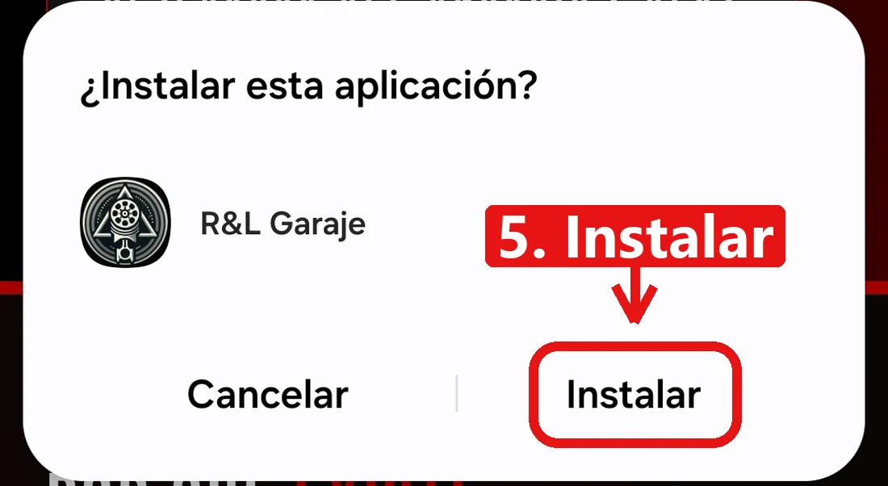
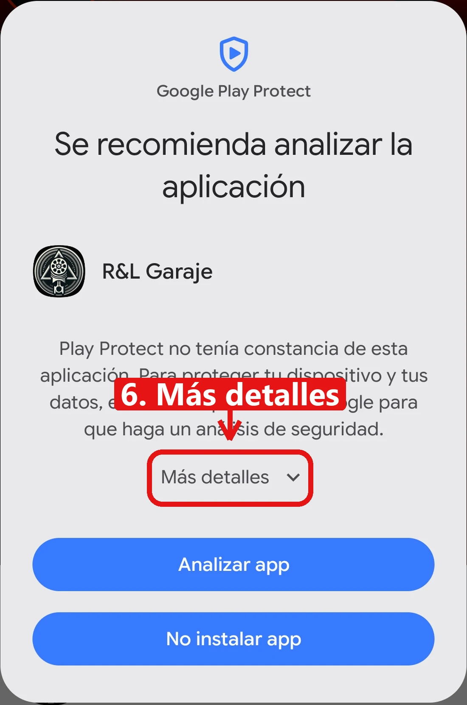
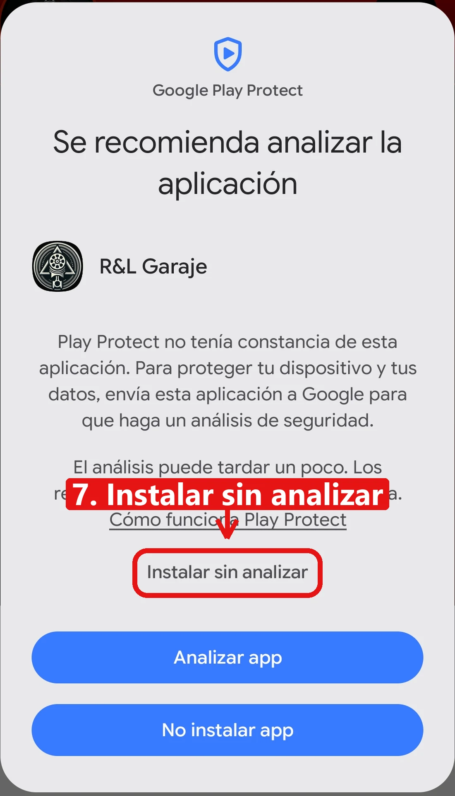
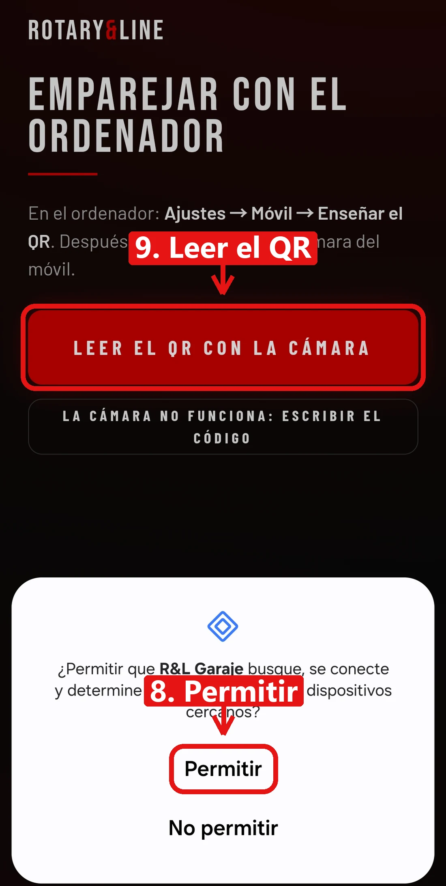
Listo. A partir de ahí, cada vez que abras la app con el móvil en la misma wifi que el ordenador y el programa abierto, se sincronizan solos. Cuando salga una versión nueva de la app, se actualiza desde ella misma.
En YouTube
Con cada versión publicamos un vídeo con lo que ha cambiado y cómo se usa.